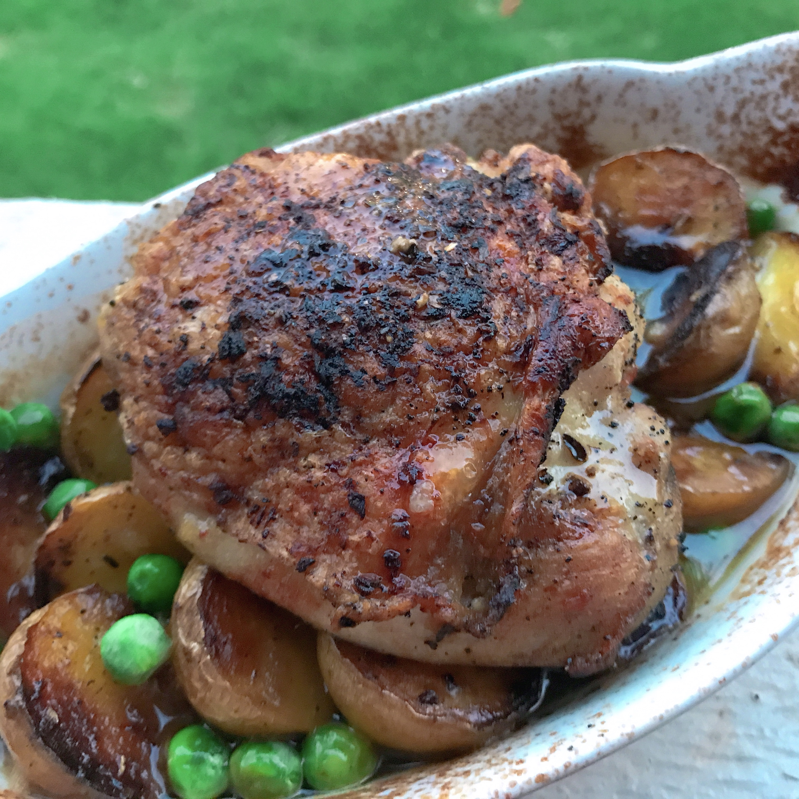

Classic Chicken Vesuvio

Ingredients
- 10 skin-on, bone-in chicken thighs
- 1 ½ teaspoons dried oregano, divided
- 1 ½ teaspoons garlic powder, divided
- 1 teaspoon salt, or to taste
- ½ teaspoon ground black pepper
- 1 tablespoon grapeseed oil, or more as needed
- 1 ½ pounds baby potatoes, halveds
Instructions
- Preheat the oven to 375 degrees F (190 degrees C).
- Season chicken thighs with 1 teaspoon oregano, 1 teaspoon garlic powder, salt, and pepper.
- Heat a large, heavy skillet over medium-high heat and add grapeseed oil. Brown chicken in the hot oil, 5 to 7 minutes. Transfer chicken pieces to a plate.